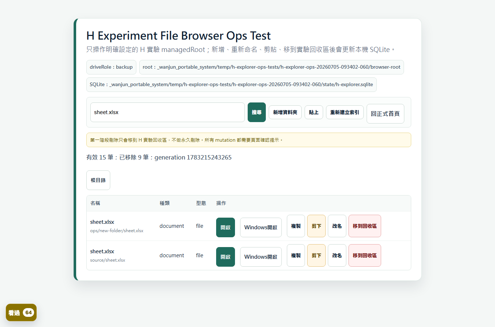
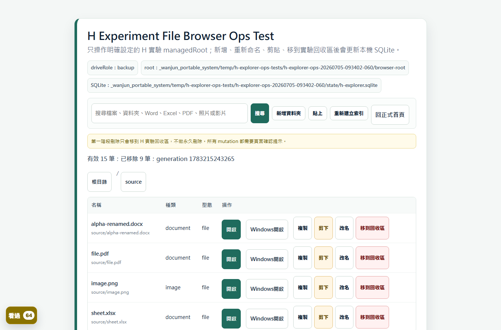
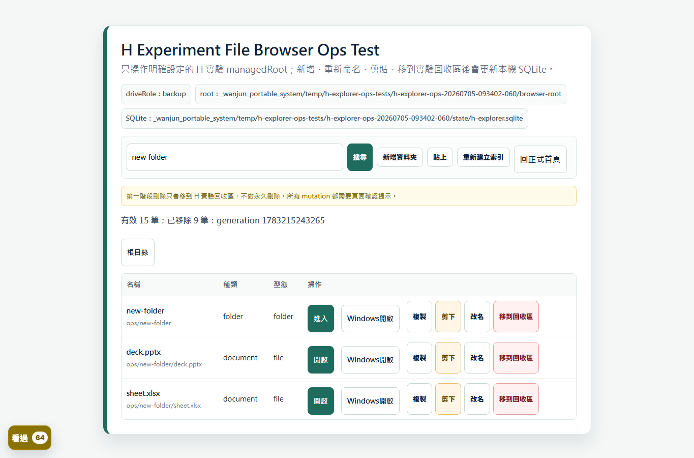
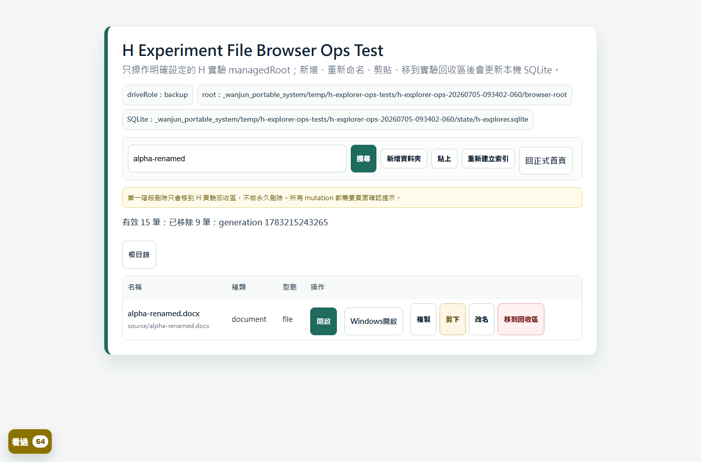
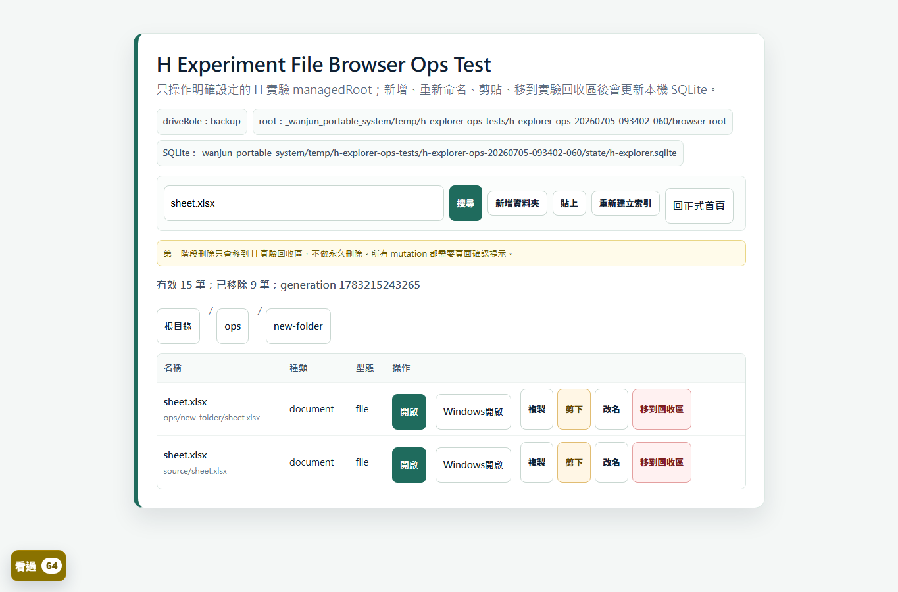
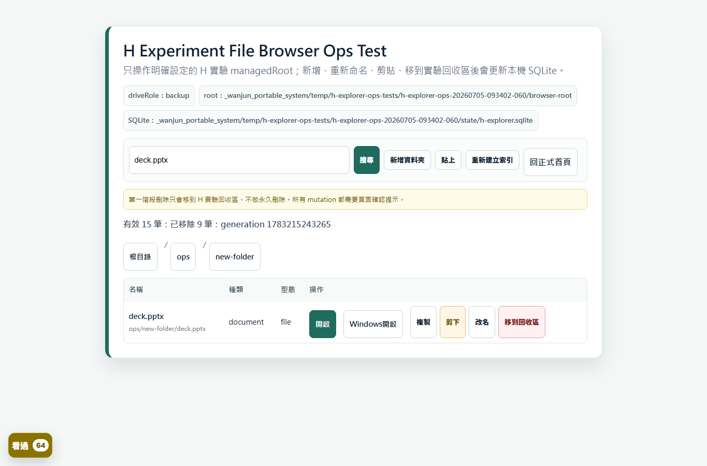
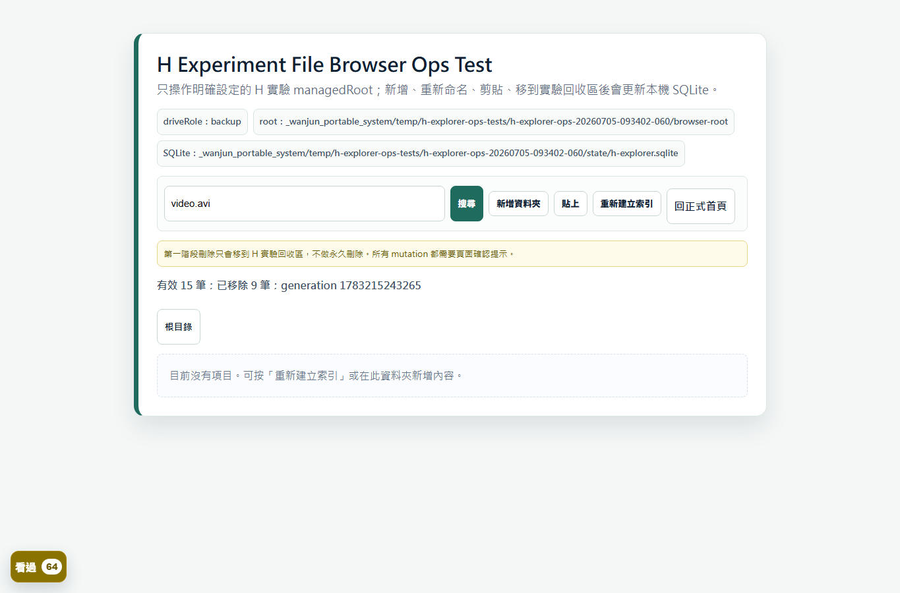
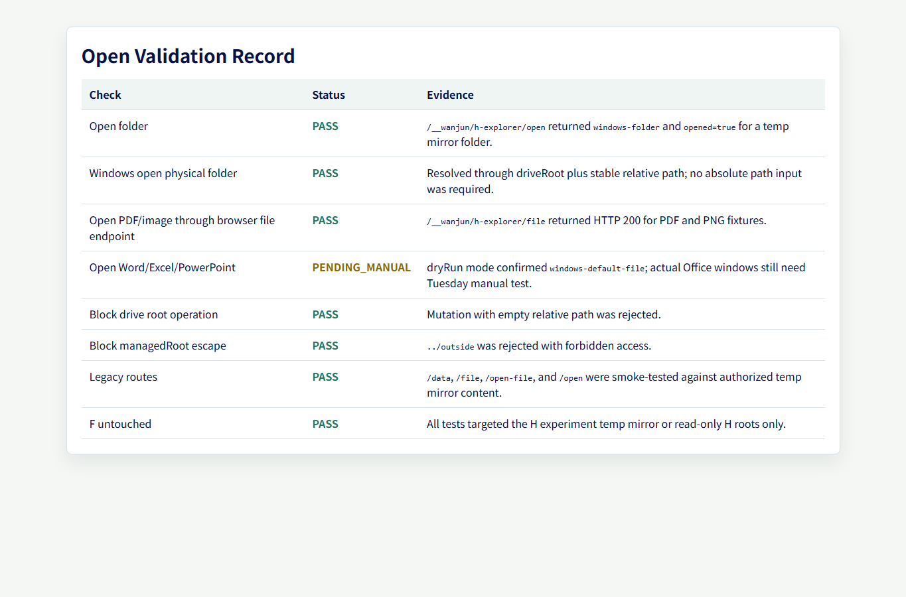
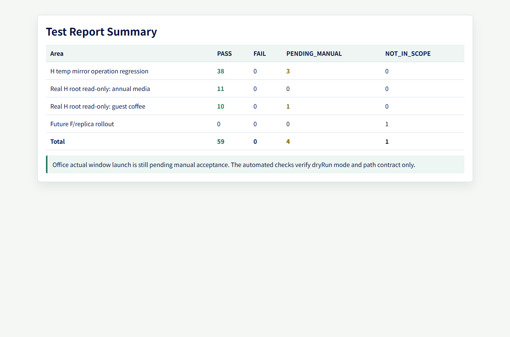

H Explorer Acceptance Gallery
2026-07-05 H experiment file browser acceptance evidence. This gallery is intentionally GitHub-safe: no true driveId, full local path, secrets, logs, SQLite, runtime, temp output, or raw F/H data are included.
branch: feature/dynamic-index-preview-poc
base checkpoint: 8a5f478
version: v2026.07.01-18
entry: /__wanjun/h-explorer
Test Report Summary
| Area | PASS | FAIL | PENDING_MANUAL | NOT_IN_SCOPE |
|---|---|---|---|---|
| H temp mirror operation regression | 38 | 0 | 3 | 0 |
| Real H root read-only: annual media | 11 | 0 | 0 | 0 |
| Real H root read-only: guest coffee | 10 | 0 | 1 | 0 |
| Future F/replica rollout | 0 | 0 | 0 | 1 |
| Total | 59 | 0 | 4 | 1 |
Office actual window launch is still pending manual acceptance. The automated checks verify dryRun mode and path contract only.
Open Validation Record
| Check | Status | Evidence |
|---|---|---|
| Open folder | PASS | `/__wanjun/h-explorer/open` returned `windows-folder` and `opened=true` for a temp mirror folder. |
| Windows open physical folder | PASS | Resolved through driveRoot plus stable relative path; no absolute path input was required. |
| Open PDF/image through browser file endpoint | PASS | `/__wanjun/h-explorer/file` returned HTTP 200 for PDF and PNG fixtures. |
| Open Word/Excel/PowerPoint | PENDING_MANUAL | dryRun mode confirmed `windows-default-file`; actual Office windows still need Tuesday manual test. |
| Block drive root operation | PASS | Mutation with empty relative path was rejected. |
| Block managedRoot escape | PASS | `../outside` was rejected with forbidden access. |
| Legacy routes | PASS | `/data`, `/file`, `/open-file`, and `/open` were smoke-tested against authorized temp mirror content. |
| F untouched | PASS | All tests targeted the H experiment temp mirror or read-only H roots only. |









